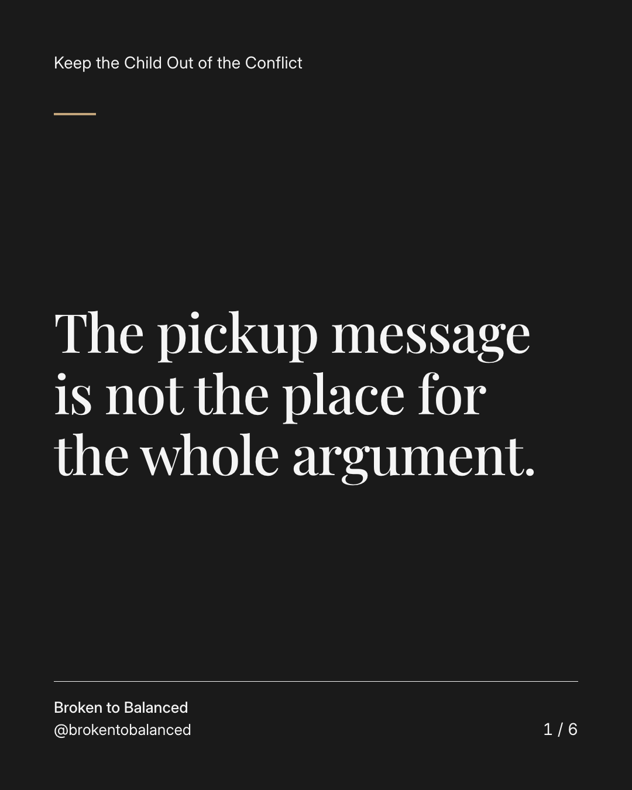
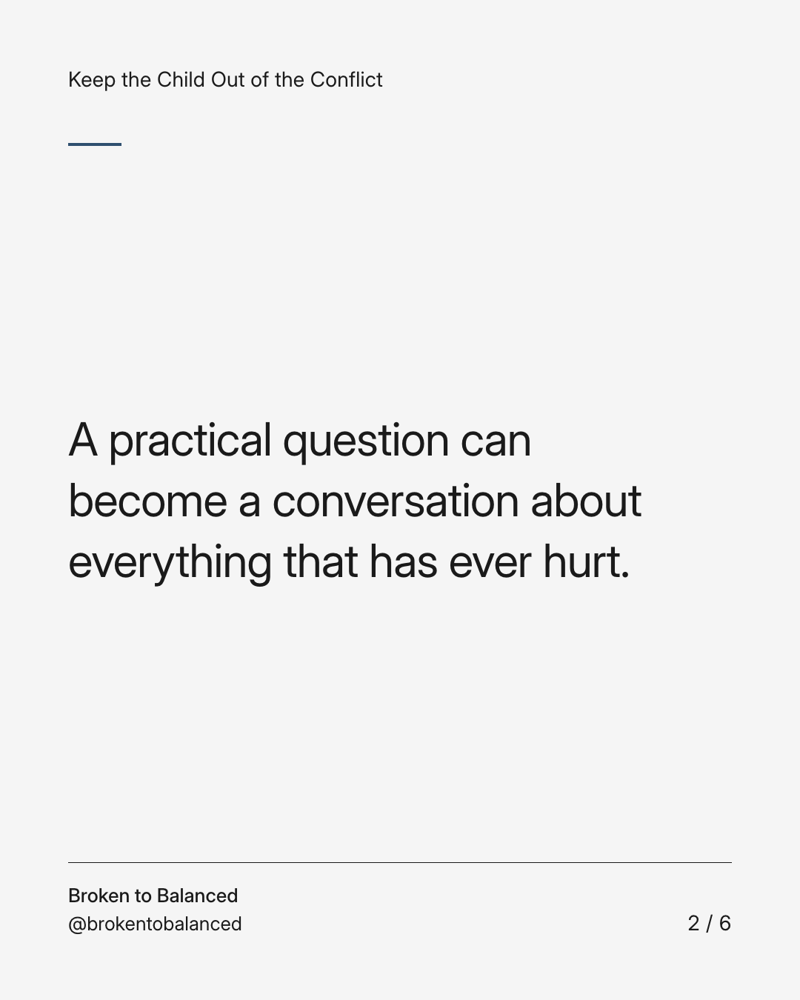
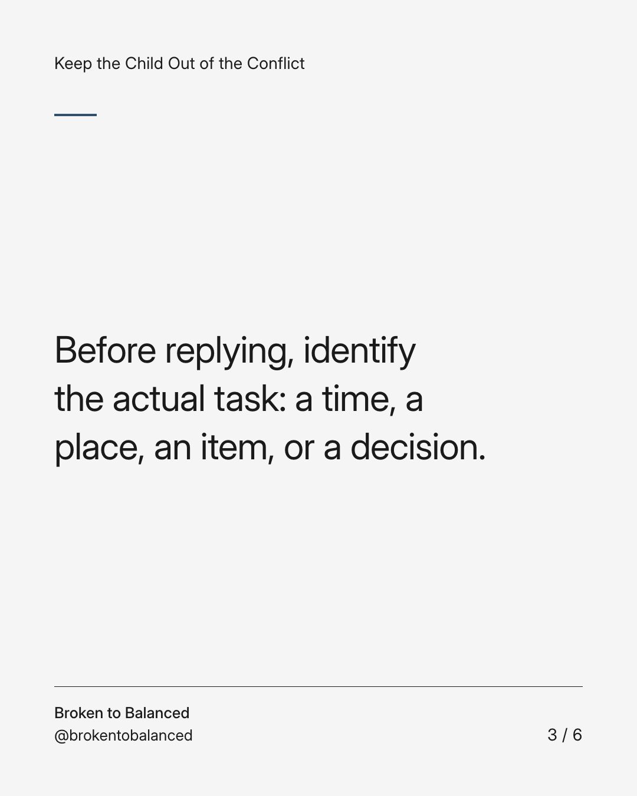
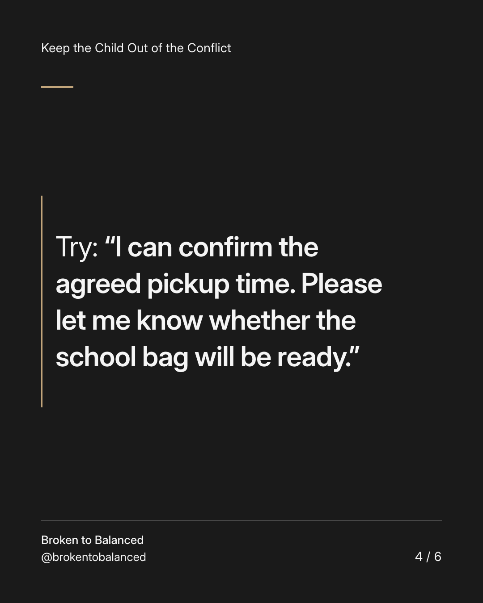
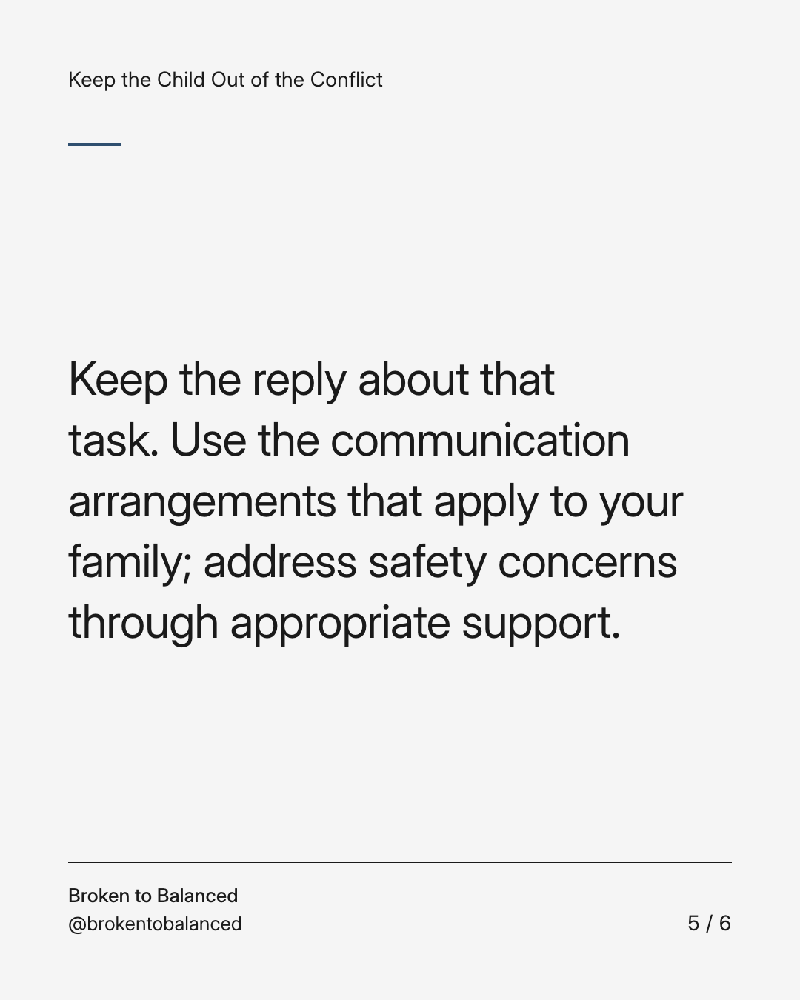
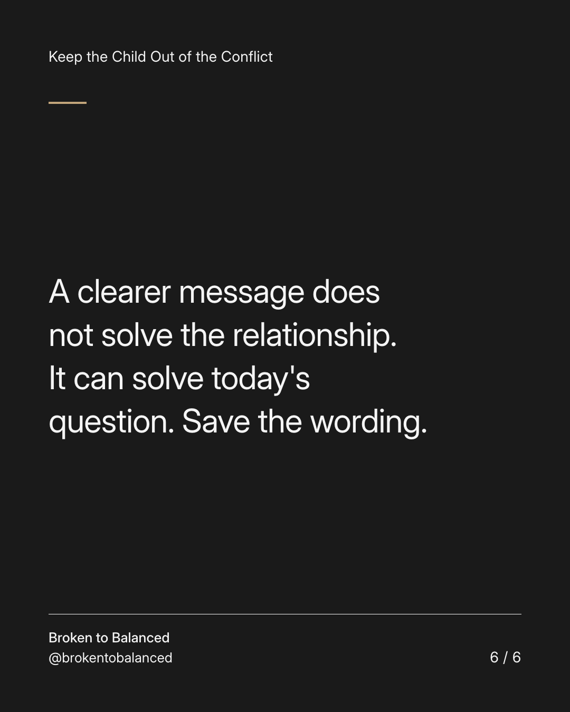

Exact text and accessibility text
The pickup message is not the place for the whole argument.
Slide 1 of 6. The pickup message is not the place for the whole argument.


Exact text and accessibility text
A practical question can become a conversation about everything that has ever hurt.
Slide 2 of 6. A practical question can become a conversation about everything that has ever hurt.


Exact text and accessibility text
Before replying, identify the actual task: a time, a place, an item, or a decision.
Slide 3 of 6. Before replying, identify the actual task: a time, a place, an item, or a decision.


Exact text and accessibility text
Try: “I can confirm the agreed pickup time. Please let me know whether the school bag will be ready.”
Slide 4 of 6. Try: “I can confirm the agreed pickup time. Please let me know whether the school bag will be ready.”


Exact text and accessibility text
Keep the reply about that task. Use the communication arrangements that apply to your family; address safety concerns through appropriate support.
Slide 5 of 6. Keep the reply about that task. Use the communication arrangements that apply to your family; address safety concerns through appropriate support.


Exact text and accessibility text
A clearer message does not solve the relationship. It can solve today's question. Save the wording.
Slide 6 of 6. A clearer message does not solve the relationship. It can solve today's question. Save the wording.
Exact caption
Plain-text fallback: select and copy the caption.